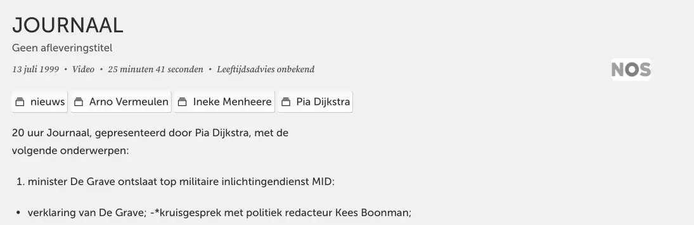

Prueba · Video
NOS Journaal, 13 de julio de 1999
El pasaje
«Noticiario de las 20 horas, presentado por Pia Dijkstra, con los siguientes temas: el ministro De Grave destituye a la cúpula del servicio de inteligencia militar MID: declaración de De Grave; -*conversación en directo con el redactor político Kees Boonman; […]» La descripción de la emisión en la página de archivo de De Schatkamer, hasta el primero de los doce temas inclusive. Los caracteres «-*» son restos de formato de la descripción de archivo y se han dejado tal como están. Traducido del neerlandés; el texto original figura a continuación.
Texto original
“20 uur Journaal, gepresenteerd door Pia Dijkstra, met de volgende onderwerpen: minister De Grave ontslaat top militaire inlichtingendienst MID: verklaring van De Grave; -*kruisgesprek met politiek redacteur Kees Boonman; […]”

Por qué importa este documento
En junio de 1999, Giltay presentó ante el fiscal jefe Van Gend una querella contra Barbara Overduyn por difamación (smaad) y calumnia (laster). Dos semanas después, el ministro de Defensa, Frank de Grave, apartó al jefe del servicio de inteligencia militar, H.J. Vandeweijer, y a su adjunto, R. Wielinga. Este noticiario abre con la propia declaración de De Grave sobre esa decisión. Muestra cómo se presentó la salida forzosa al público el mismo día.
Procedencia
- Documento
- Noticiario de televisión, 25 minutos 41 segundos
- Publicación
- NOS Journaal, emisión de las 20:00, sin título de episodio
- Emisora
- NOS
- Presentadora
- Pia Dijkstra
- Fecha
- 13 de julio de 1999
- Referencia
- ID 2101608080064630031
- Tema
- Primero de los doce temas: el ministro Frank de Grave aparta a la dirección del Servicio de Inteligencia Militar (MID), con una declaración de De Grave y una conversación en directo con el redactor político Kees Boonman
- Idioma
- Neerlandés
- Conservado por
- Instituto Neerlandés de la Imagen y el Sonido (Beeld en Geluid), De Schatkamer, colección Publieke omroepen
- Copia archivada
- Wayback Machine, 30 de agosto de 2026
- Véase también
- Giltay al fiscal jefe de La Haya, 28 de junio de 1999
Citado en: el ensayo «La prohibición cayó, el libro quedó en pie» en el capítulo (3) «Lo que revela el libro: el encubrimiento en torno a Srebrenica».
Ficha de prueba: https://
Documento: https://
Copia archivada: https://
Consultado el 27 de noviembre de 2026.

Esta página es una ficha de prueba del libro El general del encubrimiento de Edwin Giltay y del sitio web que lo acompaña.